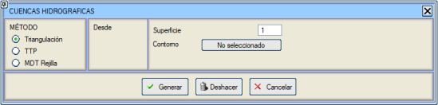
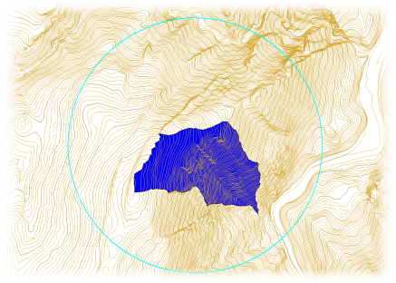
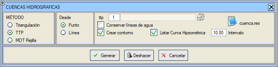
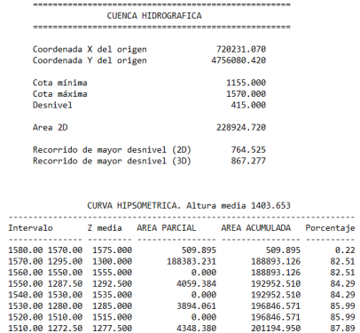
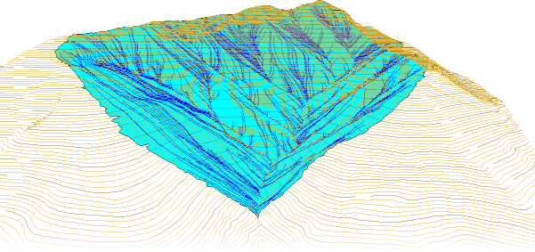
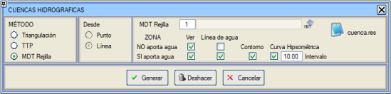

| |
|
SU TOPLAMA HAVZALARI
|
ISTRAM®/ISPOL®, üç farklı yönteme göre su toplama havzalarının hesaplanmasına olanak tanır:
Bir .edm/.edb dosyasından, üçgenleme ile Bu yöntem, seçilen bir noktaya akan havzanın alanını hesaplamayı sağlar. 
Bu yöntemle, sadece su toplama havzasını oluşturan yüzeyin tanımlandığı bir .edm/.edb dosyası ve çalışmanın sınırlandırılacağı bir kontur ile başlamak yeterlidir. Bu parametreler ayarlandıktan sonra, programın su toplama havzasını hesaplaması ve çizmesi için [Oluştur] butonuna basmak yeterli olacaktır; program daha sonra çalışmayı gerçekleştirmek için seçilen kontur içindeki EDM'yi üçgenleyecektir. 
Üçgenlemeye göre su toplama havzası hesaplama örneği Bir .ttp dosyasından Bu su toplama havzası oluşturma yöntemi, temel olarak bir topografik üçgenleme .ttp dosyası alır. .ttp dosyası,  butonu ile erişilebilen SAM kontrolü listesinin indeksi aracılığıyla bildirilir. İletişim kutusunda bildirildikten sonra, kullanıcının [Oluştur] butonuna bastıktan sonra, bir dere yatağına ait olan bir üçgen ağı noktasını seçmesi yeterlidir; böylece program, tüm üçgen köşe noktalarından suyun tüm akış yollarını (ayrıca su yolları olarak da adlandırılır) analiz eder ve seçilen noktadan geçenleri işaretler. butonu ile erişilebilen SAM kontrolü listesinin indeksi aracılığıyla bildirilir. İletişim kutusunda bildirildikten sonra, kullanıcının [Oluştur] butonuna bastıktan sonra, bir dere yatağına ait olan bir üçgen ağı noktasını seçmesi yeterlidir; böylece program, tüm üçgen köşe noktalarından suyun tüm akış yollarını (ayrıca su yolları olarak da adlandırılır) analiz eder ve seçilen noktadan geçenleri işaretler.Bir çizgi için su toplama havzasını, arazi modeli olarak bir SAM Grid tipi yüzey alarak oluşturma imkanımız var. 
Program bu yöntemle iki tür sonuç sunar:


.ttp'ye göre su toplama havzası hesaplama örneği Bir SAM Grid modelinden 
|